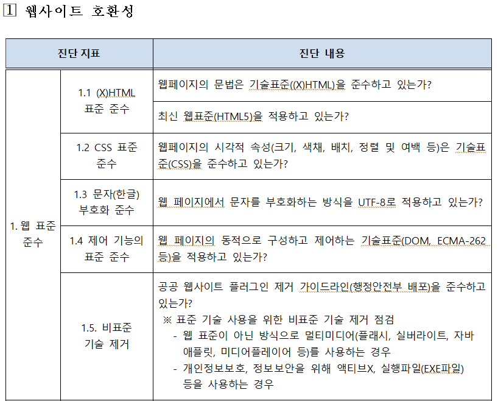

홈으로
웹 표준이란?
1. 웹 표준이란?
- 웹에서 사용되는 사용되는 기술이나 규칙
- 표준화 단체인 W3C가 권고한 표준안에 따라 웹사이트를 작성할 때 이용하는 HTML, CSS, JavaScript 등에 대한 규정이 담겨 있다.
- 어떤 운영체제나 브라우저를 사용하더라도 웹페이지가 동일하게 보이고 정상 작동해야함을 의미한다.
- 표준 스펙을 잘 지키는 것 뿐만 아니라 구조적 마크업(XHTML)과 표현 및 레이아웃(CSS) 및 사용자 행위 제어(DOMScripting)를 잘 분리하는 고급 홈페이지 구축 방식.
- CSS 와 HTML(XHTML)로 웹 문서를 작성하는 것의 명확한 용어는 권고(recommend)라고 하며 버전과 상관없이 HTML, XHTML은 그 자체로 표준이라고 한다.
2. 웹 표준의 기술
- XHTML (eXtensible Hypertext Markup Language)
- CSS (Cascading Style Sheets)
- XML (eXtensible Markup Language)
- DOM(Document Object Model)
- ECMAScript : ECMA international 의 ECMA-262 기술 명세에 정의된 표준화된 스크립트 프로그래밍 언어
3. 웹 표준을 지켰을 때의 장점
- 발 및 운영의 효율성 제고. 즉 소스의 통일화로 수정 및 운영관리가 용이하다.
- 다양한 브라우저, 휴대폰 PDA, 장애인 지원용 프로그램에서도 대응이 가능하므로 접근성이 향상 되고, 장애인, 고령자 등을 포함한 사용자층도 확대 가능하다.
- 논리적이고 효율적으로 작성된 웹 문서는 코드의 양이 줄어 파일 크기가 줄고 서버부담의 감소로 이어질 수 있다.
- CSS와 HTML이 분리되어 유지보수에 들어가는 시간이 단축되고, 불필요한 마크업이 최소화되어 페이지 로딩속도가 향상된다.
- 오래된 브라우저에서도 컨텐츠가 적절하게 표시되고 호환성과 운용성이 확보된다.
- 스크린리더기 등 보조공학 기기 사용자들이 조금 더 정확한 정보를 얻을 수 있도록 돕는다.
- 검색봇을 통한 효율적 노출과 같은 검색엔진 최적화가 가능하다.
4. 웹 표준 관련 지침
- 전자정부 웹사이트 품질관리 지침(행정안전부, '21.2.27.)

5. 웹 접근성
- 모든 사용자가 신체적, 환경적 조건에 관계없이 웹에 접근하여 이용할 수 있도록 보장하는 것
- W3C 정의에 따르면 웹 표준은 접근성, 사생활 보호, 보안, 국제화의 측면에서 고려해야 한다고 한다.
- 웹 접근성은 신체적 차이나 장애 여부와 상관없이 누구나 원활하게 웹페이지를 이용할 수 있어야 한다는 것을 의미 한다.
6. 웹 콘텐츠 접근성 지침(WCAG)
- 인지성(Perceivable) : 정보와 사용자 인터페이스 요소는 그들이 인지할 수 있도록 사용자에게 표시될 수 있어야 한다.
- 운용성(Operable) : 사용자 인터페이스 요소와 탐색은 운용 가능해야 한다.
- 이해성(Understandable) : 정보와 사용자 인터페이스 운용은 이해할 수 있어야 한다.
- 내구성(Robust) : 콘텐츠는 보조 기술을 포함한 넓고 다양한 사용자 에이전트에 의존하여 해석될 수 있도록 충분히 내구성을 가져야 한다.
7. 웹 접근성을 위해 사용되는 보조기기
- 자막
- 스크린리더
- 자동완성 기능
- 마우스스틱
- 색상 대비 디자인